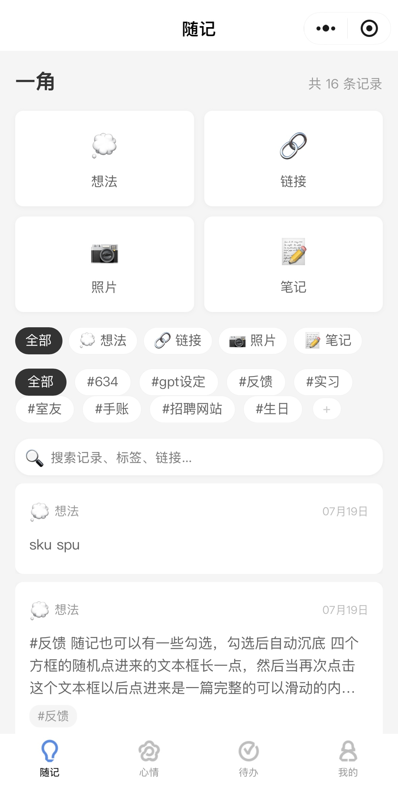
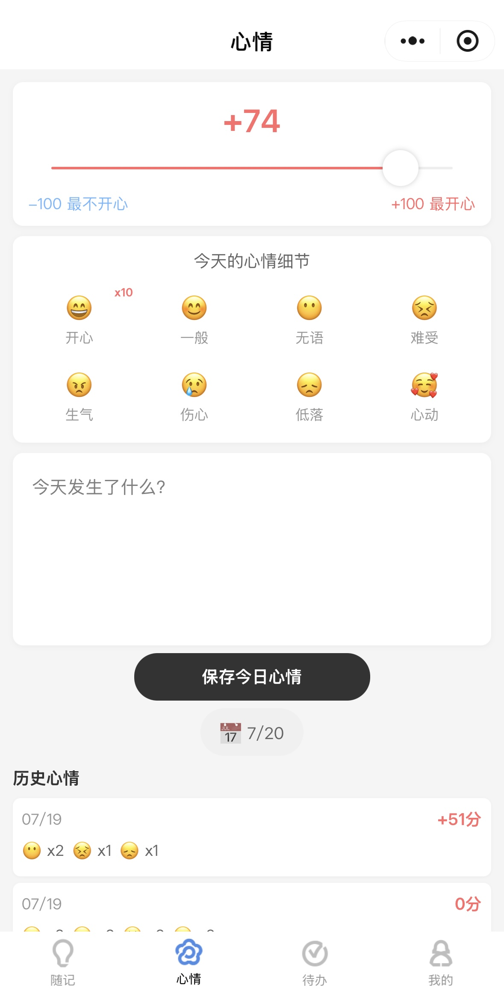
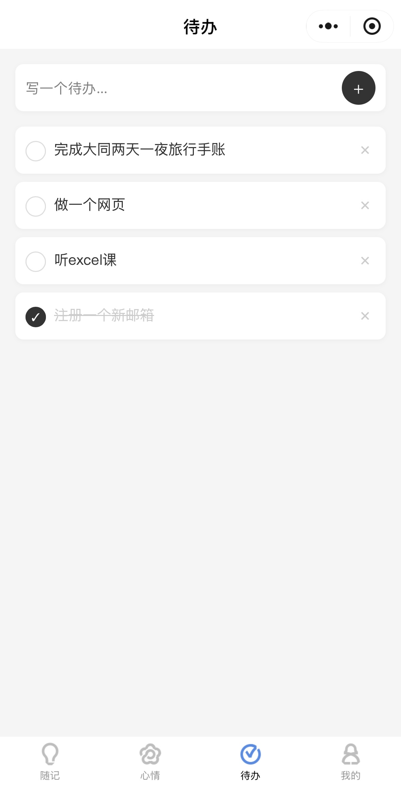
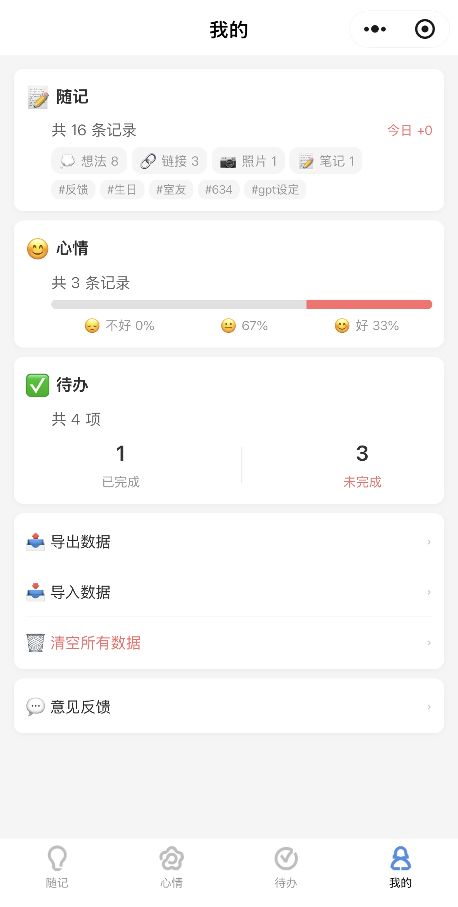

故事的起点
一个从「我没有规划、记性不太好」出发的产品
「我是一个没有规划的人，记性也不太好。
突发想法记在备忘录，好内容点收藏，灵感发给微信小号……
然后，就再也没有然后了。」
—— 这是产品的起点。不是市场分析，不是用户画像，就是我自己的一句话。
4
记录类型
9
页面
18
核心功能(P0)
5天
从想法到上线
「我是一个没有规划的人，记性也不太好。
突发想法记在备忘录，好内容点收藏，灵感发给微信小号……
然后，就再也没有然后了。」
—— 这是产品的起点。不是市场分析，不是用户画像，就是我自己的一句话。
打开即写，无需标题、无需分类、无需格式。想法/链接/照片/笔记四种入口任选
所有记录按时间倒序排列。记新内容时顺手路过旧内容——推动想法自然落地
消化完了就左滑删除。没有云端备份的顾虑，数据清空就是真的清空
-100~+100 滑杆打分 · 8种表情标记 · 历史心情查看 · 日期筛选
不是每日压力清单，是「这阶段想做的事」。拖拽排序 · 备注展开 · 无提醒
输入 #标签 自动识别 · 分类筛选 · 全文搜索 · 标签滚动栏
全部本地存储 · 无需登录 · 数据导出/导入 · 一键清空（双重确认）
从自己的使用痛点出发：备忘录越用越乱、收藏夹再也没打开过、灵感散落四处。先写了一个 MVP 原型验证这个方向。
完成立项文档、PRD、需求分级（P0/P1/P2共36项）。所有文档通过与 Codex 对话讨论推进，一边写一边讨论，迭代完善。
微信原生框架，完成9个页面、3388行代码、全部CRUD与交互实现。开发过程基于 Codex 辅助编写代码，通过持续对话驱动功能迭代——我说想法和需求，Codex 出代码，我再调整指令，反复打磨。
基于自己的真实使用感受，进行了约12轮UI/UX优化：间距、动效、边缘状态、分类筛选、日期修复等。
真机调试、边界条件测试、审核备注撰写——正式上架微信小程序。
正在邀请新用户进行试用阶段，收集反馈推动下一轮迭代。埋点方案已规划（页面PV/UV + 19个核心行为事件）。




📦 存储即目的
📂 分类越细越好
♾️ 鼓励永久保留
🏋️ 越用越重
⚙️ 功能越多越好
🔄 存储是手段，消化是目的
🗑️ 一个筐就够了，#标签只是线索
✅ 鼓励用过即删
🍃 越用越轻
🎯 功能越少越好